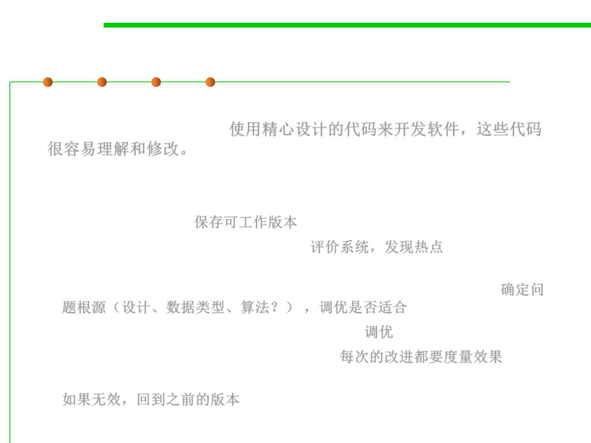

Code Tuning Process
8.3 Code Tuning for Performance Optimization
▪ Develop the software using well-designed code that’s easy to
understand and modify.使用精心设计的代码来开发软件，这些代码
很容易理解和修改。
▪ If performance is poor:
– Save a working version of the code so that you can get back to the “last
known good state.” 保存可工作版本
– Measure the system to find hot spots. 评价系统，发现热点
– Determine whether the weak performance comes from inadequate design,
data types, or algorithms and whether code tuning is appropriate. 确定问
题根源（设计、数据类型、算法？） ，调优是否适合
– Tune the bottleneck identified in the last step. 调优
– Measure each improvement one at a time. 每次的改进都要度量效果
– If an improvement doesn’t improve the code, revert to the previous code.
如果无效，回到之前的版本
▪ Repeat.